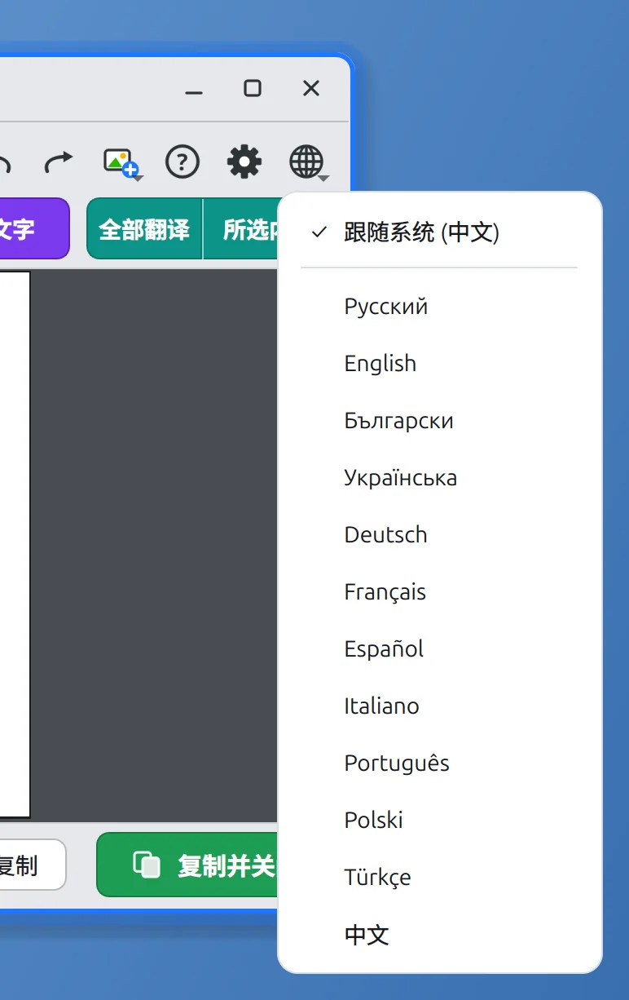
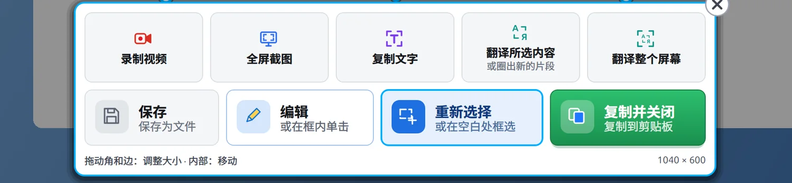
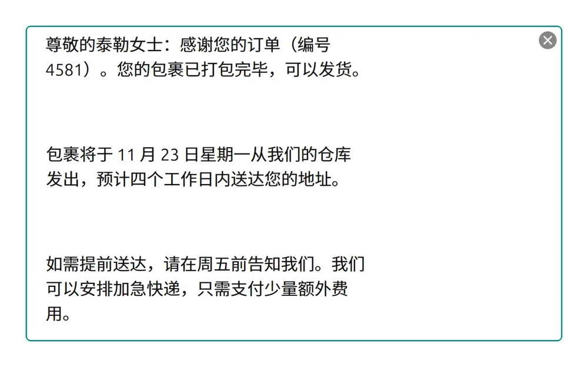

版本历史
版本 1.31.0
发布于
- ClipSD 支持 12 种语言：俄语、英语、保加利亚语、乌克兰语、德语、法语、西班牙语、意大利语、葡萄牙语、波兰语、土耳其语和中文。语言立即切换，无需重启：时钟旁的图标菜单、编辑器中的地球图标、导览的第一步或设置。

- 区域选择窗口的新面板：上排是全屏截图、录制视频、复制文字和翻译，下排是“编辑”“保存”和“复制并关闭”。

- 逐块翻译：框选一块区域，译文会覆盖在原文上；再框选下一块，它也会被翻译。按 Esc 结束此模式。

- 编辑器的“复制文字”“裁剪”和“翻译”模式在顶部显示一条带大号退出按钮的提示栏；按 Esc 返回之前的工具。

- ClipSD 可以自动更新。每天检查一次是否有新版本，并提供“更新”“稍后”或“跳过此版本”。立即检查：图标菜单中的“检查更新”。更新经过数字签名验证；如果新版本无法启动，会自动恢复之前的版本。